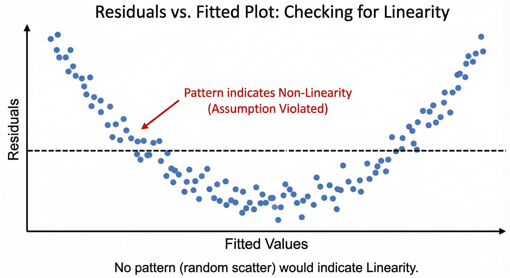
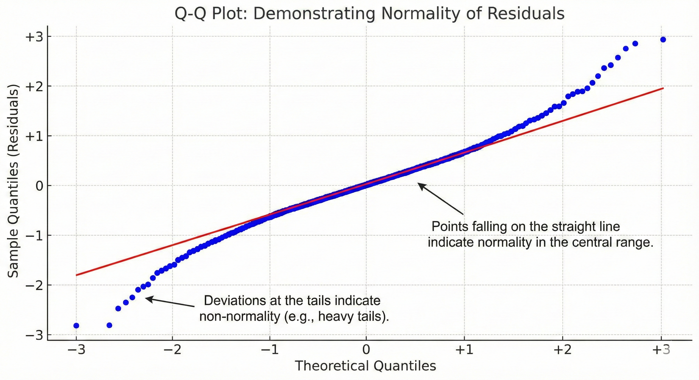
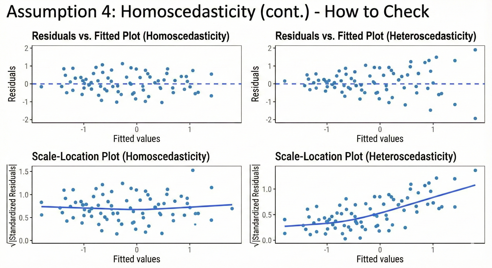

Checking Model Assumptions
The Four Key Assumptions
For valid inference from linear regression, we must verify:
- Linearity: Relationship between X and Y is linear
- Independence: Observations are independent
- Normality: Residuals follow a normal distribution
- Homoscedasticity: Constant variance of residuals
Remember: LINE assumptions (Linearity, Independence, Normality, Equal variance)
Assumption 1: Linearity
What Does It Mean?
The relationship between each predictor and the outcome should be linear (or appropriately transformed).
Assumption 1: Linearity (cont.)
How to Check
Residuals vs. Fitted Plot
- Plot residuals against predicted values
- Look for random scatter around zero
- Warning signs: Curved patterns, U-shapes, systematic trends
Partial Residual Plots
- Examine linearity for each predictor individually
- Useful when multiple predictors are present
Assumption 1: Linearity (cont.)

Assumption 2: Independence
What Does It Mean?
Observations should be independent of each other - one observation shouldn’t influence another.
Common Violations
- Clustered data: Patients within hospitals, students within schools
- Time series: Measurements over time on same subjects
- Spatial correlation: Geographic proximity
Assumption 2: Independence (cont.)
How to Check
- Consider study design
- Plot residuals in order of data collection
- Look for patterns suggesting correlation
Solutions
Use specialized models: mixed effects, time series, or spatial models
Assumption 3: Normality of Residuals
What Does It Mean?
The residuals (not the raw data!) should follow a normal distribution.
How to Check
Q-Q Plot (Quantile-Quantile Plot)
- Points should fall approximately on a straight line
- Deviations at the tails indicate non-normality
Assumption 3: Normality of Residuals (cont.)
How to Check
Histogram of Residuals
- Should resemble a bell curve
- Check for skewness or multiple peaks
Assumption 3: Normality of Residuals (cont.)

Assumption 3: Normality of Residuals (cont.)
How to Check
Shapiro-Wilk Test
- Formal hypothesis test for normality
- p > 0.05 suggests normality (but sensitive in large samples)
Why Normality Matters (and Doesn’t)
Less Critical Than You Think
With large sample sizes (n > 30-40), the Central Limit Theorem protects us:
- Coefficient estimates remain unbiased
- Hypothesis tests remain approximately valid
Why Normality Matters (and Doesn’t)
When It Really Matters
- Small sample sizes (n < 30)
- Extreme outliers present
- Making predictions with confidence intervals
Why Normality Matters (and Doesn’t)
Solutions for Violations
- Transform the outcome variable (log, square root)
- Use robust regression methods
- Consider non-parametric alternatives
Assumption 4: Homoscedasticity
What Does It Mean?
Homoscedasticity = constant variance of residuals across all levels of predictors
Heteroscedasticity = variance changes (increases or decreases) with fitted values
Assumption 4: Homoscedasticity (cont.)
How to Check
Residuals vs. Fitted Plot
- Vertical spread should be roughly constant
- Funnel shape: Indicates heteroscedasticity
- Fan shape: Variance increases with fitted values
Scale-Location Plot
- Plot square root of standardized residuals vs. fitted values
- Should show horizontal line with random scatter
Assumption 4: Homoscedasticity (cont.)

Consequences of Heteroscedasticity
What Goes Wrong?
Standard errors are biased
- Confidence intervals are incorrect (too narrow or too wide)
- p-values are unreliable
- Hypothesis tests may be invalid
Coefficient estimates remain unbiased
- The βs are still correct on average
- But we can’t trust their precision
Consequences of Heteroscedasticity (cont.)
Solutions
- Transform outcome: log, square root transformations
- Weighted least squares: Give less weight to high-variance observations
- Robust standard errors: Adjust SEs without changing coefficients
What is Multicollinearity?
When two or more predictor variables are highly correlated with each other.
Example
In a health study predicting blood pressure:
- Height (cm) and Weight (kg) are correlated
- BMI includes both height and weight
- Using all three creates multicollinearity
Why It’s a Problem
Makes it difficult to isolate the individual effect of each correlated predictor.
Consequences of Multicollinearity
Unstable Coefficient Estimates
- Small changes in data lead to large changes in coefficients
- Coefficients may have unexpected signs
Consequences of Multicollinearity
Inflated Standard Errors
- Wide confidence intervals
- Non-significant results even when relationship exists
Consequences of Multicollinearity
Difficulty in Interpretation
- Hard to determine which predictor is truly important
- “Holding other variables constant” becomes problematic
What Multicollinearity Does NOT Affect
- Overall model fit (R²)
- Predictions and fitted values
Detecting Multicollinearity
Correlation Matrix
- Examine pairwise correlations between predictors
- Rule of thumb: |r| > 0.8 or 0.9 suggests potential problems
- Limitation: Only detects pairwise relationships
Detecting Multicollinearity
Variance Inflation Factor (VIF)
Most reliable diagnostic tool for multicollinearity.
\[VIF_j = \frac{1}{1 - R^2_j}\]
Where R²ⱼ is from regressing predictor j on all other predictors.
Interpreting VIF Values
VIF Interpretation Guidelines
| VIF = 1 |
No correlation |
Ideal |
| 1 < VIF < 5 |
Moderate correlation |
Generally acceptable |
| 5 ≤ VIF < 10 |
High correlation |
Investigate |
| VIF ≥ 10 |
Severe multicollinearity |
Take action |
Interpreting VIF Values (cont.)
What VIF Tells Us
VIF = 5 means the standard error is √5 = 2.24 times larger than it would be without correlation.
VIF = 10 means variance is inflated 10-fold.
Dealing with Multicollinearity
Remove Redundant Variables
- Drop one of the highly correlated predictors
- Keep the one with stronger theoretical justification or easier to measure
Dealing with Multicollinearity (cont.)
Combine Variables
- Create a composite index or average
- Example: Combine multiple measures of socioeconomic status
Dealing with Multicollinearity (cont.)
Principal Components Analysis (PCA)
- Create uncorrelated components from correlated predictors
- Loss of interpretability
Dealing with Multicollinearity (cont.)
Increase Sample Size
- Reduces standard errors
- Not always feasible
When to Worry About Multicollinearity
It Depends on Your Goal
Prediction: Don’t worry much
- Multicollinearity doesn’t affect predictions
- R² and fitted values remain valid
When to Worry About Multicollinearity (cont.)
It Depends on Your Goal
Inference and Interpretation: Worry
- If you need to interpret individual coefficients
- If you want to understand specific predictor effects
- If testing hypotheses about specific variables
When to Worry About Multicollinearity
It Depends on Your Goal
Exploratory Analysis: Moderate concern
- Understand the correlation structure
- Be cautious with interpretation
- Report VIF values
What is an Interaction?
An interaction occurs when the effect of one predictor on the outcome depends on the level of another predictor.
Also called effect modification or moderation.
Model with Interaction
\[Y = \beta_0 + \beta_1X_1 + \beta_2X_2 + \beta_3(X_1 \times X_2) + \epsilon\]
The coefficient β₃ represents the interaction effect.
Understanding Interactions
Without Interaction (Additive Effects)
The effect of X₁ is the same regardless of X₂.
Example: Exercise reduces blood pressure by 5 mmHg for everyone, regardless of age.
With Interaction (Multiplicative Effects)
The effect of X₁ changes depending on X₂.
Example: Exercise reduces blood pressure by 3 mmHg in young adults but 8 mmHg in older adults. Age modifies the effect of exercise.
Types of Interactions
Continuous × Continuous
Both predictors are continuous variables.
Example: Age × BMI predicting diabetes risk
- Effect of BMI on diabetes may increase with age
- Creates a curved surface in 3D space
Types of Interactions (cont.)
Continuous × Categorical
One continuous, one categorical predictor.
Example: Drug dose × Sex predicting blood pressure
- Men and women may respond differently to the same dose
- Creates different slopes for each group
Types of Interactions (cont.)
Categorical × Categorical
Both predictors are categorical.
Example: Treatment × Disease severity predicting recovery
- Treatment may be more effective in severe vs. mild cases
- Creates different treatment effects for each severity level
Visualizing Interactions
- Interaction plots: Show how the effect of one variable changes across levels of another
- Stratified analyses: Separate analyses within subgroups
- Predicted values plots: Display fitted values across predictor combinations
Interpreting Models with Interactions
Example Model
\[\text{Blood Pressure} = \beta_0 + \beta_1(\text{Age}) + \beta_2(\text{Exercise}) + \beta_3(\text{Age} \times \text{Exercise})\]
Interpreting Models with Interactions (cont.)
Interpretation
β₁: Effect of age when exercise = 0
β₂: Effect of exercise when age = 0 (often not meaningful!)
β₃: How much the effect of age changes for each unit of exercise (or vice versa)
For specific ages: Must calculate the effect at meaningful values of the moderator.
Testing for Interactions
Statistical Testing
Hypothesis Test
- H₀: β₃ = 0 (no interaction)
- H₁: β₃ ≠ 0 (interaction exists)
Significance of Interaction Term
- If p < 0.05 for the interaction coefficient, evidence of effect modification exists
- Main effects alone are insufficient to describe the relationship
Important Principle
Always include main effects when you include an interaction term, even if they’re not significant.
The interaction term is meaningless without the main effects.
When to Include Interactions
Theoretical Reasons
Biological Plausibility
- Known mechanisms suggest effect modification
- Example: Drug metabolism differs by genetic variant
When to Include Interactions (cont.)
Theoretical Reasons
Prior Research
- Previous studies found interactions
- Replication of known effect modifications
When to Include Interactions (cont.)
Exploratory Analysis
Check for interactions when:
- Subgroup analyses show different effects
- Stratified plots suggest non-parallel trends
- Scientific question specifically asks about effect modification
Caution
- Don’t test every possible interaction (multiple testing)
- Interactions require larger sample sizes to detect
- Model complexity increases rapidly
The Challenge
When you have many potential predictors, which ones should you include in your final model?
Goals of Model Selection
- Parsimony: Simplest model that adequately explains the data
- Prediction accuracy: Best predictive performance
- Interpretability: Understandable and meaningful
- Avoid overfitting: Model shouldn’t fit noise in the data
The Bias-Variance Tradeoff
- Too few predictors: High bias, underfitting
- Too many predictors: High variance, overfitting
- Goal: Find the sweet spot
Stepwise Selection Methods
Forward Selection
Algorithm:
- Start with no predictors (intercept only)
- Add the predictor that improves model fit the most
- Keep adding predictors one at a time
- Stop when no predictor improves the model significantly
Stopping Criteria: p-value threshold, AIC, or BIC
Stepwise Selection Methods (cont.)
Backward Elimination
Algorithm:
- Start with all predictors in the model
- Remove the least significant predictor
- Keep removing predictors one at a time
- Stop when all remaining predictors are significant
Stepwise Selection Methods (cont.)
Stepwise Selection (Bidirectional)
Algorithm:
- Combines forward and backward
- At each step, can add or remove predictors
- More flexible than purely forward or backward
- Can reconsider previously added/removed variables
Criticisms of Stepwise Methods
Statistical Problems
- Inflates Type I error rates
- Standard errors and p-values are too small
- Coefficient estimates are biased
- Model uncertainty is not accounted for
Reproducibility Issues
- Small changes in data lead to different models
- Not stable across samples
Alternative Approaches
Theory-Driven Selection
Best Practice: Let scientific knowledge guide model selection
- Include variables based on prior research
- Consider confounding and causal relationships
- Include predictors regardless of statistical significance if theoretically important
Alternative Approaches (cont.)
All-Subsets Regression
Test all possible combinations of predictors.
Exhaustive but computationally intensive: With p predictors, there are 2p possible models.
Compare using R², Adjusted R², AIC, BIC.
Regularization Methods
Beyond Traditional Selection
Modern approaches that shrink coefficients toward zero.
Regularization Methods (cont.)
Lasso Regression (L1 Penalty)
- Can shrink coefficients exactly to zero
- Performs automatic variable selection
- Useful when p is large
Regularization Methods (cont.)
Ridge Regression (L2 Penalty)
- Shrinks coefficients but doesn’t eliminate them
- Useful when predictors are correlated
- Doesn’t perform variable selection
Regularization Methods (cont.)
Elastic Net
- Combines Lasso and Ridge
- Best of both worlds
Practical Recommendations
Model Selection Strategy
- Start with Theory
- Include predictors based on subject-matter knowledge
- Consider confounders and mediators
- Check for Multicollinearity
- Calculate VIF for all predictors
- Remove or combine highly correlated variables
Practical Recommendations (cont.)
Model Selection Strategy
- Consider Interactions
- Test theoretically plausible interactions
- Include if significant and meaningful
- Compare Candidate Models
- Use AIC, BIC, and Adjusted R²
- Assess model assumptions for top candidates
Validation and Overfitting
The Overfitting Problem
A model that fits the current data perfectly may perform poorly on new data.
k-Fold Cross-Validation:
- Split data into k subsets (folds)
- Train model on k-1 folds
- Test on the remaining fold
- Repeat k times
- Average performance across folds
Validation and Overfitting (cont.)
Train-Test Split
- Hold out a portion of data (e.g., 20-30%)
- Build model on training set
- Evaluate performance on test set
- Test set simulates new data
Model Selection: Summary
Key Principles
Parsimony: Simpler models are preferred if they fit adequately (Occam’s Razor)
Context Matters: Selection criteria depend on your goal
- Prediction: Prioritize predictive accuracy
- Inference: Prioritize interpretability and valid standard errors
- Causal inference: Include confounders regardless of significance
Model Selection: Summary (cont.)
Key Principles
Avoid Data Dredging: Don’t let the data alone determine your model without theoretical justification
Report Your Process: Be transparent about how you selected your final model
Final Thoughts
The Art and Science of Regression
Building a multivariable regression model requires:
- Statistical knowledge: Understanding methods and assumptions
- Subject-matter expertise: Knowing what makes sense in your field
- Critical thinking: Questioning results and checking assumptions
- Honesty: Reporting methods transparently
Remember
A model is a simplified representation of reality. All models are wrong, but some are useful.